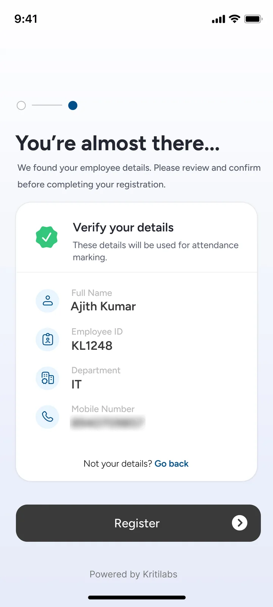
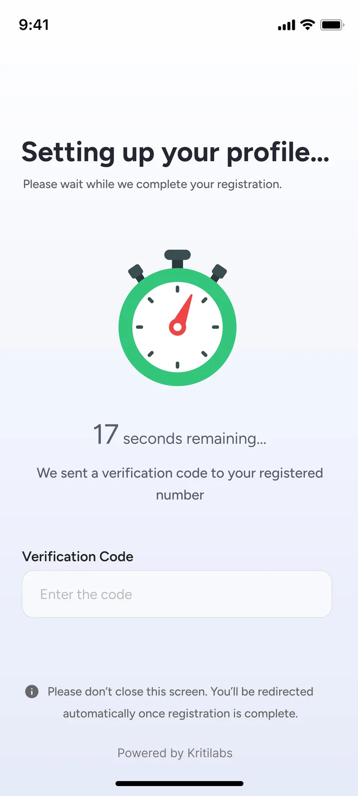
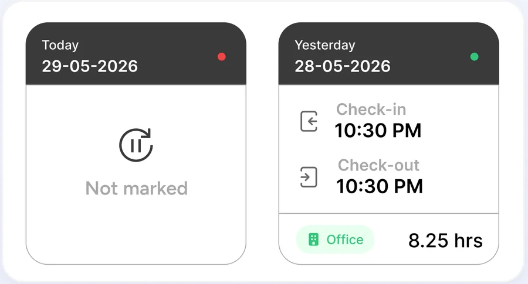

Kriti Attendance
Making daily attendance clearer, from registration to check-out.
A mobile app redesign focused on helping employees register, understand their attendance status, review location accuracy, and access recent attendance records.
Project overview
Kriti Attendance is an employee-facing attendance application for Kritilabs. The redesign brings registration, attendance actions, GPS feedback, and daily records into a more structured experience.

The challenge
Attendance is a repeated daily task. Employees need to understand whether they have marked attendance, what action comes next, and whether their location information is ready.
The earlier interface displayed employee details, location timestamps, GPS accuracy, and attendance actions in a largely form-based layout. Technical labels such as "Fix Time" and "Accuracy" required interpretation, while the main screen gave limited visibility into attendance progress and recent records.
The design challenge was to make the process easier to understand, including situations where registration, location access, or connectivity interrupts the task.

The design goal
Create an attendance experience that answers three questions clearly:
1What is my attendance status?
2What should I do next?
3If something goes wrong, how can I continue?
Users and scope
The users are Kritilabs employees, for whom attendance is a repeated daily task. The app is employee-facing (B2E), so each screen has to make status and next steps clear without training.
- Registration
- Attendance states
- Location feedback
- Attendance summary
- Error recovery
The core journey
Core journey
- Enter employee details
- Review and verify
- Complete registration
- Review attendance and location status
- Mark attendance
- Check out
- Review the daily record
Recovery states
- Location access disabled
- Internet unavailable
- Registration message not delivered
Location and connectivity recovery states support this journey when the normal flow is interrupted.
Design decisions
Drag across the panel to compare the earlier screen with the redesign.
1. A guided registration experience
I divided registration into focused stages: entering employee information, reviewing the matched details, processing registration, and confirming completion.
The verification screen lets employees review their name, employee ID, department, and registered mobile number before proceeding. A "Not your details? Go back" option provides a clear way to correct a mismatch.
Processing and success screens explain what is happening during setup. The design also includes a verification-code flow and a message-delivery failure state with guidance to retry or contact HR/admin support.


2. Attendance status at the centre of the experience
I designed separate screens for Not Marked, Checked In, and Checked Out.
Making these states explicit gives employees a clearer indication of where they are in the daily attendance process. The primary action changes with the state, including a check-out action after check-in.
Employee information, current status, location details, and the attendance summary are grouped into distinct sections so each serves a clear purpose.
3. More understandable location feedback
Location information is part of the attendance decision, so the redesign makes it easier to interpret.
The interface pairs GPS accuracy values with descriptive feedback such as "Good" or "Low" and uses "Last location update" to explain the timestamp. A refresh interaction includes a visible "Refreshing…" state.
This approach is intended to help employees distinguish between their attendance status and the readiness of their location information.

4. Recent attendance in context
The attendance summary brings recent records into the main experience. Entries show check-in and check-out times, recorded hours, and office or work-from-home labels.
Additional states cover unmarked attendance, incomplete entries, and weekly off days. These variations help represent the different situations employees may encounter when reviewing their records.

5. Recovery when the task is interrupted
I included recovery screens for disabled location access, unavailable internet connectivity, and unsuccessful registration-message delivery.
The messages describe the issue and suggest a next step, for example enabling location access or turning on Wi-Fi or mobile data. This gives employees practical guidance at the point where they need it.
Design outcome
The redesign establishes a more explicit attendance journey through guided registration, visible attendance states, understandable location feedback, and accessible recent records.
These are design outcomes. Improvements in completion time, attendance errors, or support requests would need to be measured through usability testing and production use.
The next validation step would be to test whether employees can identify their current status, complete registration, and recover from location or connectivity issues without assistance.
"This project reinforced the importance of designing beyond the main action."
An attendance experience also needs to explain waiting, confirmation, missing information, and failure.